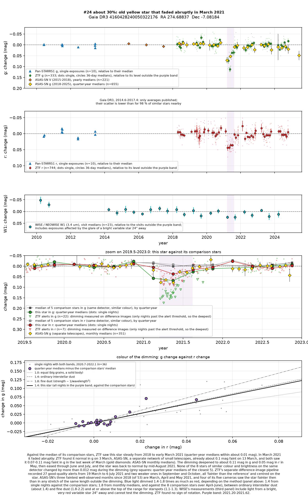
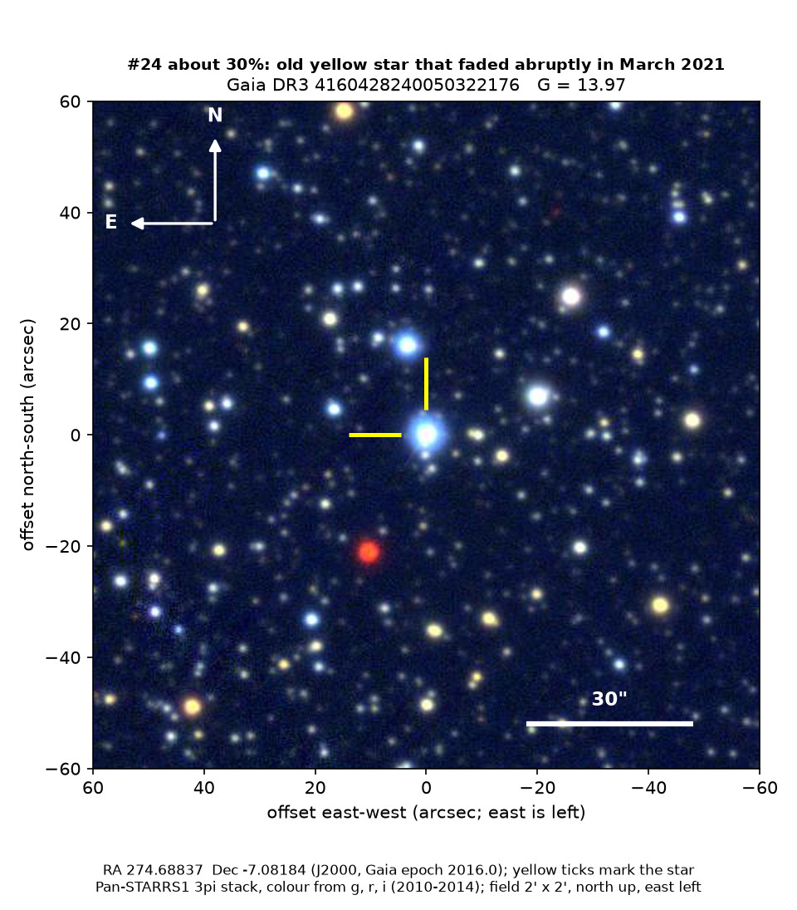
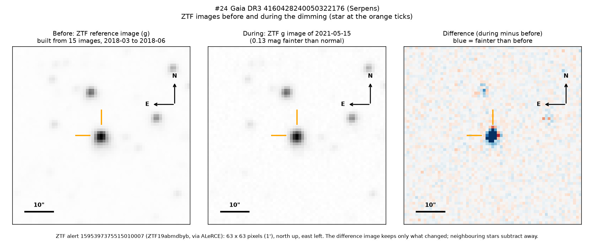
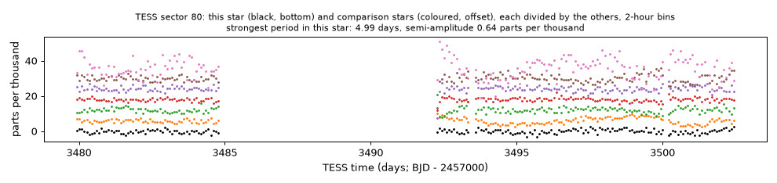

Professor of Mathematics
Paata Ivanisvili
Department of Mathematics, University of California, Irvine

Candidate 24: an old yellow star that faded abruptly in March 2021
Why this estimate. The dimming is certainly real: two independent surveys, ZTF (the Zwicky Transient Facility, a survey telescope at Palomar Observatory in California) and ASAS-SN (a worldwide network of small telescopes), recorded it, including its abrupt start. The star is old and quiet and shows no sign of spinning, so large dark starspots are unlikely, and the colour of the dimming is closer to that of dust. The estimate is not higher because only ZTF measured the colour, which argues against starspots only mildly; because the glare of a bright neighbour spoils the infrared test; because only one ZTF field covers the star; and because there is no spectrum.
How to read the pictures. The finder chart shows a patch of sky two arcminutes across, about a fifteenth of the Moon’s width, with north up and east to the left. The star sits between the two yellow ticks, and the white bar is 30 arcseconds long. On a light curve the vertical axis is magnitude, a brightness scale on which larger numbers mean fainter stars, and it is drawn so that down means fainter. Purple shading marks the dimming. Each survey uses slightly different filters, so each is compared with its own normal level. The ZTF pictures show ZTF’s reference image of the star, an image taken during the dimming, and the difference between the two, in which only what changed remains: blue means fainter and red brighter. On the TESS light curves the star is black and the comparison stars are coloured.

What changed. The star is an old yellow star in Serpens, about 570 parsecs (1,850 light-years) away; Gaia finds it close to the Sun’s temperature but larger, three times as luminous and about 7 billion years old. Earlier surveys from 2010 show nothing unusual, and ZTF, which measured it 1,077 times from 2018 to late 2024, found it within about 0.01 magnitudes of normal until early March 2021.
Then it faded abruptly. ZTF found it normal on 3 March 2021 and ASAS-SN had it about 0.10 magnitudes faint on 13 March: in March the star lost about 6 per cent of its green light, most of it within about ten days. In May, the deepest month, ZTF found it 0.11 magnitudes faint in green light and 0.05 in red. It recovered through June and July and was back to normal by mid-August 2021.
Why it might matter. Dust passing in front of the star is the likeliest cause. For starspots to dim such a star by 11 per cent, a tenth of its face would have had to be covered, mostly within ten days, which is not seen in stars this old and inactive; its hydrogen-alpha line shows no magnetic activity, and neither ZTF nor NASA’s TESS space telescope found any rotation. Green light dimmed 1.4 to 1.8 times as much as red, at or above the top of the range for starspots and in the range of dust. A young star with a dusty disc is ruled out by the star’s age, motion and lack of infrared excess, and two surveys make an instrumental fault unlikely. The abrupt start points to a cloud with a sharp front edge, perhaps a dusty disc around the star or an unseen companion, as in epsilon Aurigae. A spectrum would settle what kind of star it is.
No record of the dimming could be found: SIMBAD has no object within 10 arcseconds, Gaia DR3 gives the star no variability entry, and VSX (the variable-star index) lists only its two variable neighbours. It is not in the other variable-star catalogues checked or among the dimming stars of Tzanidakis et al. (2025), and there is no Transient Name Server entry, Gaia alert or paper giving its Gaia number. ZTF’s alert system holds only machine-generated classifications.
- Star
- Gaia DR3 4160428240050322176, an old yellow star of type G
- Location
- RA 274.68837°, Dec −7.08184° (J2000), in Serpens (Serpens Cauda), 4.0 degrees north of the Milky Way’s mid-plane
- Distance
- about 570 parsecs (1,850 light-years)
- Brightness
- Gaia G = 13.97, far too faint for the eye
- Probability
- This candidate is unconfirmed. The percentage under the title is an estimate of the chance that it is a real, previously unrecorded case of the kind described. The estimate has not been checked by outside experts. See the introduction to all fifty-eight candidates.
- Caveat
- There is no spectrum, so the star’s type and age rest on Gaia’s models. TESS did not observe during the dimming, and the abrupt start rests on a few measurements. Of several other stars that dimmed in the same survey data in 2021 and 2022, candidate 28, 2.9 degrees away on the same ZTF field, dimmed over nearly the same months; but the two lie on different detectors, and no single cloud could have dimmed both.


